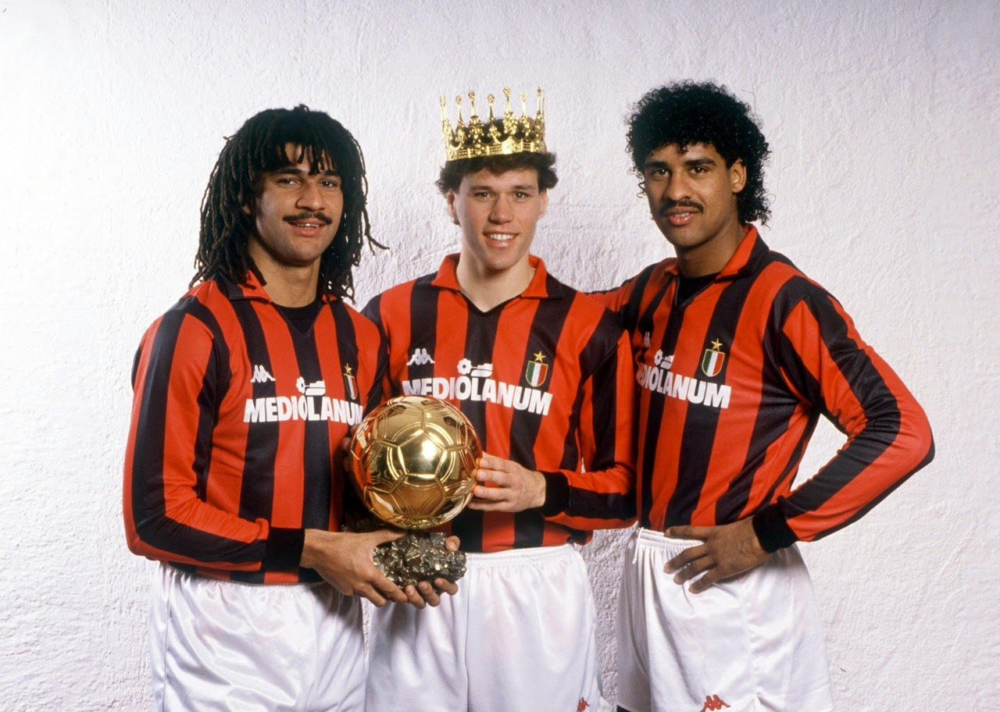
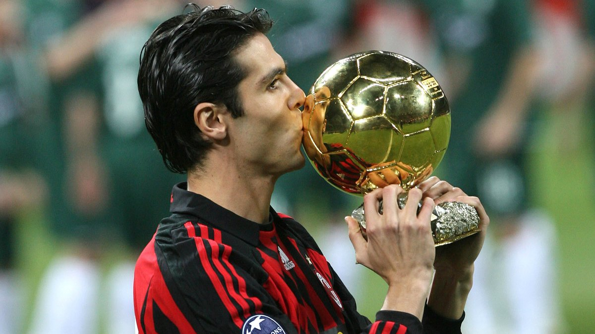
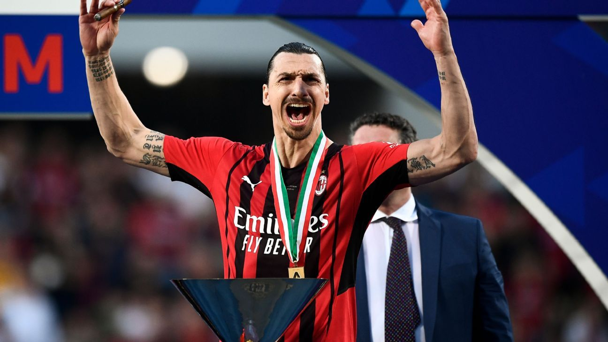

Associazione Calcio Milan, frequentemente abreviado como AC Milan ou Milan, é um clube de futebol italiano com sede em Milão.
Devido às suas relevantes conquistas, o clube é considerado um dos mais importantes do mundo.
Partilha com o seu maior rival, a Internazionale, o Estádio Giuseppe Meazza, também conhecido como San Siro, que tem capacidade para 80.018 espectadores e é o palco do clássico de Milão, o Derby della Madonnina.
O dia 16 de dezembro de 1899 é marcado na história pela criação oficial do que viria a ser um dos maiores clubes de futebol da história, a Associazione Calcio Milan. O nome original do time foi dado em referência aos dois esportes que eram praticados, “Milan Football & Cricket Club”. Era controlado pela nata da sociedade, mas com a popularização do futebol, acabou por tornar-se, com o tempo, o time dos trabalhadores da região.
Seu primeiro título já veio apenas dois anos depois de sua criação, quando derrotou Juventus e Genoa nos playoffs e foi o campeão do Campeonato Italiano, popularmente chamado de Scudetto. Conquistou tal feito mais duas vezes antes da Primeira Guerra Mundial.
Desde o início desse conflito até o fim da Segunda Grande Guerra, o Milan não possuiu bons anos, tendo em vista que a Itália passava por reconstrução e os governantes não viam com bons olhos as heranças inglesas do clube. Por esse motivo, passou-se a chamar, em 1949, Associazione Calcio Milan, perdendo de vez o sotaque inglês no nome.
A era de ouro do Milan veio com os investimentos pesados feitos pelo, na época, sétimo homem mais rico da Europa, Silvio Berlusconi, o qual assumiu a presidência do clube em 1987 e injetou grandes quantias de dinheiro para contratações. O período vitorioso foi primeiramente protagonizado por dois técnicos: Sachi e Capello.
Sachi assumiu no mesmo ano de Berlusconi, e em apenas 4 temporadas venceu grandes títulos, sendo estes 1 Campeonato Italiano, duas Copas Intercontinentais, duas Supercopas Europeias e impressionantes duas Copa dos Campeões (a atual Champions League, tão cobiçada pelos clubes europeus).
Capello assumiu o time em 1991 e suas conquistam também foram muitas, incluindo uma Liga dos Campeões, uma Supercopa da Europa, uma Supercopa da Itália e impressionantes 4 Campeonatos Nacionais, três em sequência, nos anos de 1992, 1993 e 1994.
Atualmente, o Milan é tido como um dos maiores clubes da história do futebol, e apesar de estar passando por um momento de reconstrução, é bastante temido e tido com um time de tradição no cenário nacional e internacional. A título de exemplo, o clube é o segundo, ao lado do seu maior rival Internazionale, que mais venceu Campeonatos Italianos, totalizando 18 conquistas, a última em 2011. Além disso, é o segundo time que mais venceu Champions Leagues na história com 7 taças, atrás apenas do Real Madrid, com 13.
Após consecutivos anos de meio de tabela, a temporada de 2017 – 2018 foi bastante significativa para os fãs do Milan, tendo em vista que o clube terminou em 6º lugar e voltará a disputar uma competição internacional, a Europa League.
  